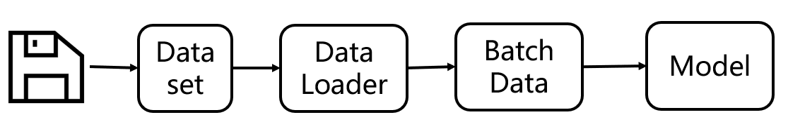
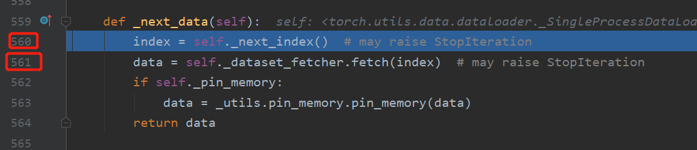
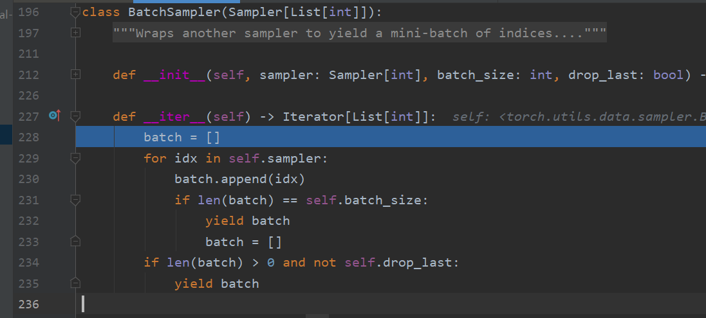
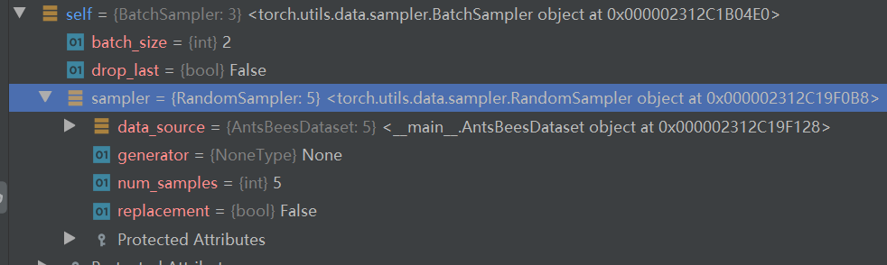

3.2 DataLoader
dataloader简介
按照上图的顺序，本小节就来到pytorch数据加载最核心模块——DataLoader。
torch.utils.data.DataLoader(dataset, batch_size=1, shuffle=False, sampler=None, batch_sampler=None, num_workers=0, collate_fn=None, pin_memory=False, drop_last=False, timeout=0, worker_init_fn=None, multiprocessing_context=None, generator=None, *, prefetch_factor=2, persistent_workers=False)
从以上可以看到，DataLoader类有14个变量，因此称为最核心模块，一点不为过。
DataLoader功能繁多，这里根据官方文档可总结为以下5大点：
- 支持两种形式数据集读取：map-style and iterable-style datasets,
- 自定义采样策略：customizing data loading order,
- 自动组装成批数据：automatic batching,
- 多进程数据加载：single- and multi-process data loading,
- 自动实现锁页内存（Pinning Memory）：automatic memory pinning.
支持两种形式数据集读取
两种形式的数据集分别是映射式(Map-style)与迭代式(Iterable-style)，在3.1小结中讲解的Dataset类就是映射式，因为它（getitem）提供了序号到数据的映射。迭代式则是编写一个可迭代对象，从中依次获取数据，此处不详细展开，感兴趣可以了解IterableDataset
注：往后不做特别说明，Dataset均表示映射式Dataset。
自定义采样策略
DataLoader可借助Sampler自定义采样策略，包括为每个类别设置采样权重以实现1:1的均衡采样，或者是自定义采样策略，关于Sampler会在后面小结详细展开，它是一个涨点神奇。
自动组装成批数据
mini-batch形式的训练称为了深度学习的标配，如何把数据组装成一个batch数据？DataLoader内部自动实现了该功能，并且可以通过batch_sampler、collate_fn来自定义组装的策略，十分灵活。
多进程数据加载
通常GPU运算消耗数据会比CPU读取加载数据要快，CPU“生产”跟不上GPU“消费”，因此需要多进程进行加载数据，以满足GPU的消费需求。通常指要设置num_workers 为CPU核心数，如16核的CPU就设置为16。
自动实现锁页内存（Pinning Memory）
锁页内存的概念通常在操作系统课程里才会涉及，非CS的同学可能会很懵，感兴趣的可以去了解一下。Pinning Memory是空间换时间的做法，将指定的数据“锁”住，不会被系统移动（交换）到磁盘中的虚拟内存，因此可以加快数据的读取速率。简单的可以理解为常用的衣服就“锁”在你的衣柜里，某些时候（如夏天），暂时不用的衣服——冬季大衣，则会移动到收纳柜里，以腾出空间放其它常用的衣服，等到冬天来临，需要用到大衣的时候，再从收纳柜里把大衣放到衣柜中。但是冬天拿大衣的时候就会慢一些，如果把它“锁”在你的衣柜，那么冬天获取它的时候自然快了，但占用了你的空间。这就是空间换时间的一个例子。这里的“锁”就是固定的意思，大家可补充学习一下OS的内容。
DataLoader API
DataLoader提供了丰富的功能，下面介绍常用的功能，高阶功能等到具体项目中再进行分析。
- dataset：不用说，它是一个Dataset实例，要能实现从索引（indices/keys）到样本的映射。（即getitem函数）
- batch_size：每个batch的样本量
- shuffle：是否对打乱样本顺序。训练集通常要打乱它！验证集和测试集无所谓。
- sampler：设置采样策略。后面会详细展开。
- batch_sampler：设置采样策略， batch_sampler与sampler二选一，具体选中规则后面代码会体现。
- num_workers： 设置多少个子进程进行数据加载（data loading）
- collate_fn：组装数据的规则， 决定如何将一批数据组装起来。
- pin_memory：是否使用锁页内存，具体行为是“the data loader will copy Tensors into CUDA pinned memory before returning them”
- drop_last：每个epoch是否放弃最后一批不足batchsize大小的数据，即无法被batchsize整除时，最后会有一小批数据，是否进行训练，如果数据量足够多，通常设置为True。这样使模型训练更为稳定，大家千万不要理解为某些数据被舍弃了，因为每个epoch，dataloader的采样都会重新shuffle，因此不会存在某些数据被真正的丢弃。
下面通过配套代码加深dataloader的理解，并且观察DataLoader 与 Dataset是如何配合使用的。
运行代码，可看到输出如下信息：
0 torch.Size([2, 3, 224, 224]) torch.Size([2]) tensor([1, 0])
1 torch.Size([2, 3, 224, 224]) torch.Size([2]) tensor([0, 1])
2 torch.Size([1, 3, 224, 224]) torch.Size([1]) tensor([0])
0 torch.Size([3, 3, 224, 224]) torch.Size([3]) tensor([0, 0, 1])
1 torch.Size([2, 3, 224, 224]) torch.Size([2]) tensor([1, 0])
0 torch.Size([2, 3, 224, 224]) torch.Size([2]) tensor([0, 0])
1 torch.Size([2, 3, 224, 224]) torch.Size([2]) tensor([0, 1])
这里主要观察batch_size和drop_last的作用，以及图片组装成batch之后的shape。
这里构建一个数据量为5的dataset，这样可以采用batchsize=2和3来观察drop_last的作用。
dataloader内部代码
下一步，我们将采用debug模式，深入dataloader内部，观察它是如何进行采样的，如何调用dataset的getitem获取数据，如何组装一个batch的。这里我们仅观察单进程模式，因此大家的num_works注意设置为0。
首先在for i, (inputs, target) in enumerate(train_loader_bs2) 设置一个断点，然后debug模式运行代码，接着持续采用 Step Into方式运行代码，下面就列出依次会进入的代码：
第一步：初始化dataloader迭代器for i, (inputs, target) in enumerate(train_loader_bs2)
DataLoader的iter()
DataLoader的_get_iterator()
SingleProcessDataLoaderIter的_init。
注：至此，仅完成了DataLoader的初始化，需要再一次进入dataloader才开始读取数据。
第二步：依次循环该迭代器来到 BaseDataLoaderIter的_next：进入521行：data = self._next_data()
来到 _SingleProcessDataLoaderIter的_next_data：此函数调用了两个重要功能，第一个获取一个batch的索引，第二个获取此batch的数据。下面一个一个来看。

进入 _SingleProcessDataLoaderIter的_next_data：进入560行， index = self._next_index()
来到 _BaseDataLoaderIter的_next_index()： 这里是对sampler的包装，调用sampler获取一批索引，进入512行
来到BatchSampler的iter()：函数中有yield，这是一个迭代器，从这里可以看到sampler是如何工作的。默认情况下，这里用的是RandomSampler， 它会实现采样的顺序及频率。在本函数中，对self.sampler依次迭代，拿到足够一个batchsize的索引时，就yield。


回到 _SingleProcessDataLoaderIter的_next_data：第561行，经过index = self._next_index() ，已经获得一个batch所对应的index，接着进入self._dataset_fetcher.fetch(index)
来到 _MapDatasetFetcher的fetch：mapdataset就是前面讲到的map-style dataset。看到第49行，是一个列表生成式，在这里，调用了我们自己写的dataset，继续进入。
来到 AntsBeesDataset的getitem：进入到这里，大家就豁然开朗了吧，知道dataset是如何被dataloader使用的。下面，直接跳出去，回到 fetch看看如何组装的。
来到 _MapDatasetFetcher的fetch：第52行self.collate_fn(data)， 这里采用collate_fn对数据进行组装，继续进入。
来到 collate.py的default_collate()：这是pytorch默认的组装函数，值得大家认真学习。这个函数通常是一个递归函数，第一次进入时可以发现会来到第84行：return [default_collate(samples) for samples in transposed]。会依次再进入一次default_collate()。
这里的逻辑是这样的：
首先将dataset返回的一系列数据解包再zip，为的是将相同数据放到一起。即getitem的return返回有img和label，这里就是为了将多个img放到一起，多个label放到一起，当然大家可以在getitem返回其它有用信息（例如图片的路径）。
接着再次进入default_collate函数时，会对实际的数据进行组装。例如img的数据会进入if isinstance(elem, torch.Tensor)，然后会看到img数据是这样被组装起来的：torch.stack(batch, 0, out=out)，因此可知一个batch的图像数据第一个维度是B，整体是BCH*W。
至此，一个batch数据已经读取、加载完毕，依次跳出函数，可回到for i, (inputs, target) in enumerate(train_loader_bs2)。
这个时候，再观察inputs, target，一定会更清晰了，知道它们是如何从硬盘到模型需要的形式。并且通过上述debug过程，我们可以知道sampler的机制、collate_fn的机制，方便今后进行高级的改造。希望大家一定要debug几遍上述过程，并且记录。
小结
以上就是关于DataLoader的概念的介绍，通过两个小节相信大家对数据读取有了初步认识，可pytorch的数据处理远不止于此，它还提供了很多使用的方法，例如数据集的拼接，数据集的截取，数据的划分等，想了解怎么使用，请接着往下看。